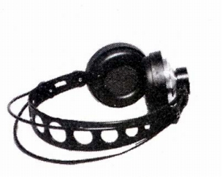

K140/4

■価格 11,000円■型式 ダイナミック型■振動板 ■インピーダンス 600Ω■再生周波数帯域 20-20,000Hz■許容入力 250mW■感度 ■コード 3m■重量 175g（コード含まず）■発売 1975年頃■販売終了 1976年頃■備考 阪田商会の扱いのK140カルダンと同じ機種と思われる。AKGのサイトによれば標準プラグ付きの個体をK140/4、DINプラグ付きをK140/5と呼ぶようだ
AKGのインデックスへ